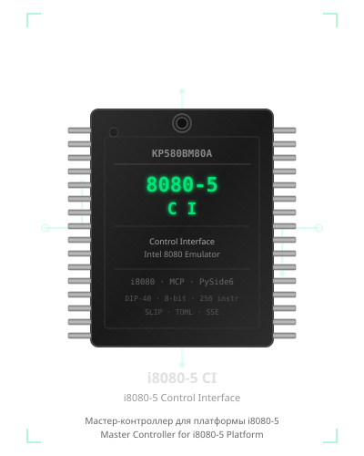

i8080-5 CI

{kind=link}
{kind=link}
!Qt
{kind=link}
English
i8080-5 CI (i8080-5 Control Interface) — a comprehensive Master Controller for the i8080-5 hardware platform. Combines a full i8080 CPU emulator, interactive debugger, real-hardware bridge, and AI integration (MCP server) in a single desktop application.
Русский
i8080-5 CI (i8080-5 Control Interface) — комплексная среда управления аппаратной платформой i8080-5: эмулятор CPU, отладчик, мост к реальному устройству и интеграция с AI-ассистентами в одном приложении.
Screenshots / Скриншоты
| Main Window / Главное окно | Hex Editor / Hex-редактор | Disassembler / Дизассемблер |
|---|---|---|
 |  |  |
| Emulator / Эмулятор | Trace Log / Трассировка | Device Connection / Устройство |
|---|---|---|
 |  |  |
| Micro-80 Profile | Specialist Profile |
|---|---|
 |  |
Features / Возможности
Emulation & Debugging / Эмуляция и отладка
EN:
- i8080 CPU Emulator — full 256-instruction set including undocumented instructions
- Debugger — breakpoints (regular & conditional), step / step-over, run-to, watch windows, trace log
- Disassembler — real-time with jump arrows and instruction-type highlighting
- Hex Editor — view and edit memory images with search and block operations
- Memory Test — RAM verification using various patterns (walking bit, chessboard, etc.)
- Comparison — diff current memory image against a reference file
RU:
- Эмулятор i8080 CPU — полный набор из 256 инструкций, включая недокументированные
- Отладчик — точки останова (обычные и условные), пошаговое выполнение, run-to, watch-окна, трассировка
- Дизассемблер — в реальном времени со стрелками переходов и подсветкой типов команд
- Hex-редактор — просмотр и редактирование образов памяти с поиском и блочными операциями
- Тест памяти — проверка RAM различными паттернами (walking bit, шахматный и др.)
- Сравнение — сравнение текущего образа памяти с эталонным файлом
Hardware Interface / Аппаратный интерфейс
EN:
- Real Device Control — read/write memory and IO ports via COM port (SLIP protocol)
- IO Sequencer — execute sequences of input/output operations
- 25+ IO Devices — I8255, I8253, I8251, I8259, I8257, I8237, I8272, I8275, I8276, I8279, I16550, I512VI1, CF/IDE, CH376S (SD), AM9511, LCD1602, LCD2004, TFT8080, Keyboard 8x8, 3D Cube, Discrete Video, Bitmap Video, and more
RU:
- Управление реальным устройством — чтение/запись памяти и IO-портов по COM-порту (протокол SLIP)
- IO Секвенсор — выполнение последовательностей операций ввода-вывода
- 25+ IO-устройств — I8255, I8253, I8251, I8259, I8257, I8237, I8272, I8275, I8276, I8279, I16550, I512VI1, CF/IDE, CH376S (SD), AM9511, LCD1602, LCD2004, TFT8080, Клавиатура 8x8, 3D-куб, Дискретное видео, Bitmap-видео и другие
System Profiles / Системные профили
EN:
- TOML-based profiles for popular i8080 systems (see System Profiles)
- Dynamic device configuration with memory-mapped IO support
- Shadow ROM, banked, paged, and segmented memory models
- Port range inversion support (Mikro-80 PPI)
RU:
- TOML-профили для популярных i8080-систем (см. Системные профили)
- Динамическая конфигурация устройств с поддержкой MMIO
- Модели памяти: Shadow ROM, банкная, страничная, сегментная
- Поддержка инверсии диапазона портов (PPI Mikro-80)
AI Integration / AI-интеграция
EN:
- MCP Server — integrate with AI assistants (Claude Desktop, Cursor, etc.) via SSE transport
- Scripts — Python automation for reproducible tests and workflows
RU:
- MCP-сервер — интеграция с AI-ассистентами (Claude Desktop, Cursor и др.) через SSE-транспорт
- Скрипты — автоматизация на Python для воспроизводимых тестов и рабочих процессов
UI / Пользовательский интерфейс
EN:
- PySide6 desktop GUI with Russian / English interface
- Light / Dark themes
RU:
- PySide6 настольное GUI с интерфейсом на русском и английском
- Светлая / Тёмная темы
Installation / Установка
Requirements / Требования
EN:
- Python 3.10+
- PySide6, pyserial (installed automatically via requirements)
RU:
- Python 3.10+
- PySide6, pyserial (устанавливаются автоматически через requirements)
Setup / Настройка
# Clone / extract / Клонировать / Распаковать
cd i8080-5_CI
# Create virtual environment / Создать виртуальное окружение
python -m venv .venv
.venv\Scripts\activate # Windows
# source .venv/bin/activate # Linux / macOS
# Install dependencies / Установить зависимости
pip install -r requirements.txt
# Run / Запустить
python i8080_CI.py
Build EXE (Windows) / Сборка EXE (Windows)
pyinstaller --onefile --hide-console minimize-late --optimize 2 i8080_CI.py
Project Structure / Структура проекта
i8080_CI.py # Entry point / Точка входа (thin wrapper)
i8080_emulator.py # i8080 CPU emulator / Эмулятор i8080 (QObject, Qt Signals)
mcp_server.py # MCP Server / MCP-сервер (FastMCP, SSE)
i8080_ci/ # Application package / Пакет приложения
│ i18n.py # Internationalization / Интернационализация (RU/EN, themes)
│ slip.py # SLIP protocol / Протокол SLIP (constants, encode/decode)
│ intelhex.py # Intel HEX parser/generator / Парсер/генератор Intel HEX
│ disassembler.py # i8080 disassembler / Дизассемблер i8080
│ bus_worker.py # Serial bus worker / Рабочий шину (QThread)
│ automation.py # AutomationAPI / API автоматизации (script interface)
│ main_window.py # MainWindow / Главное окно (QMainWindow)
│ models/
┃ hex_model.py # HexEditor table model / Модель hex-редактора
┃ watch_model.py # Watch window model / Модель watch-окна
┃ bp_model.py # Breakpoint model / Модель точек останова
┃ trace_model.py # Trace log model / Модель трассировки
│ views/
┃ disasm_view.py # Disassembler view / Вид дизассемблера (jump arrows)
┃ hex_view.py # Hex editor table view / Вид hex-редактора
┃ search.py # Search dialog / Диалог поиска
modules/ # Hardware abstraction / Аппаратное абстрагирование
│ system.py # ComputerSystem / ComputerSystem - integration hub
│ memory/ # Memory models / Модели памяти (banked, paged, shadow, MMIO)
│ io/ # IO devices / IO-устройства (I8255, I8253, I8272, I16550, ...)
│ config/ # Device config / Конфигурация устройств & profiles
ui/ # Additional widgets / Дополнительные виджеты (device manager, etc.)
profiles/ # TOML system profiles / TOML-профили систем
roms/ # ROM images / Образы ROM
tests/ # Test suite / Набор тестов (pytest)
requirements.txt # Python dependencies / Python-зависимости
pyproject.toml # Project metadata / Метаданные проекта
logo.svg # Project logo / Логотип проекта
MCP Server / MCP-сервер
EN: The built-in MCP server allows AI assistants to interact with the emulator and connected hardware:
- Launch the application
- Enable MCP Server (button in main window or checkbox)
- Connect an AI client — example for Claude Desktop:
RU: Встроенный MCP-сервер позволяет AI-ассистентам взаимодействовать с эмулятором и подключённым оборудованием:
- Запустите приложение
- Включите MCP Server (кнопка в главном окне)
- Подключите AI-клиент — пример для Claude Desktop:
{
"mcpServers": {
"i8080": {
"url": "http://127.0.0.1:8000/sse"
}
}
}
Available Tools / Доступные инструменты
| Category / Категория | Tools |
|---|---|
| Emulator / Эмулятор | emu_reset, emu_step_into, emu_step_over, emu_run, emu_run_to, emu_stop, emu_get_state |
| Registers / Регистры | emu_get_reg, emu_set_reg, emu_get_psw, emu_set_psw, emu_get_flags, emu_set_flag |
| Breakpoints / Точки останова | emu_add_breakpoint, emu_remove_breakpoint, emu_add_conditional_breakpoint, emu_list_breakpoints |
| Memory / Память | read_mem, write_mem, read_block, write_block, fill_mem |
| IO | dev_read_io, dev_write_io, emu_get_io_ports |
| Device / Устройство | dev_read_mem, dev_write_mem, download, upload |
| Analysis / Анализ | disassemble, search, load_file, save_file, analyze_firmware, find_bugs |
Full guide / Полное руководство: MCP_GUIDE.md
System Profiles / Системные профили
| Profile / Профиль | Description / Описание |
|---|---|
micro80 | Mikro-80 (16 KB RAM, I8255, Keyboard 8x8, port inversion) / Микро-80 (16 КБ RAM, I8255, клавиатура, инверсия портов) |
microsha | MicroSha (32 KB RAM, I8253, I8255) |
radio86rk | Radio-86RK (64 KB RAM, I8255, I8279, I8253) |
apogey | Apogey (64 KB RAM, I8255, I8279, video) |
orion128 | Orion-128 (128 KB RAM, expanded IO) |
vector06c | Vector-06C (vector display) |
specialist | Specialist (full IO set, bitmap video) / Специалист (полный набор IO, bitmap-видео) |
full | Full device set (all supported modules) / Полный набор устройств |
empty | Minimal configuration (CPU only) / Минимальная конфигурация (только CPU) |
Profile files / Файлы профилей: profiles/ (TOML format / TOML-формат)
Testing / Тестирование
EN: 30 test files, 767 checks, 100% pass rate.
RU: 30 файлов тестов, 767 проверок, 100% прохождение.
# Run all tests / Запустить все тесты
pytest tests/
# Run a specific test file / Запустить конкретный файл тестов
pytest tests/test_i8255.py -v
# Run emulator standalone / Запустить эмулятор самостоятельно
python i8080_emulator.py
Documentation / Документация
| Document / Документ | Description / Описание |
|---|---|
| USER_GUIDE.md | User guide / Пользовательское руководство |
| MCP_GUIDE.md | MCP integration guide / Руководство по MCP-интеграции |
| SCRIPTS_GUIDE.md | Automation scripts guide / Руководство по скриптам |
| ANALYSIS.md | Technical project analysis / Технический анализ проекта |
| CHANGES.md | Changelog / Журнал изменений |
| I18N_AUDIT.md | i18n audit report / Аудит интернационализации |
Hardware Module / Аппаратный модуль
EN: 8080-5-CI Module — debug and download board for the i8080-5 platform.
RU: Модуль 8080-5-CI — плата для отладки и прошивки платформы i8080-5.
GitHub: https://github.com/R2AKT/8080-5-CI
License / Лицензия
License addendum / Дополнение к лицензии: Addendum.txt
Chip Theme / Тема чипа
EN: The logo features the КР580ВМ80А — the Soviet-era clone of Intel 8080 CPU (DIP-40 package). The "КР" prefix denotes the Soviet manufacturer, "ВМ" — "Высоко-Микроминиатюрный" (highly miniaturized).
RU: Логотип основан на КР580ВМ80А — советском клоне процессора Intel 8080 (корпус DIP-40). Префикс "КР" обозначает советского производителя, "ВМ" — "Высоко-Микроминиатюрный".